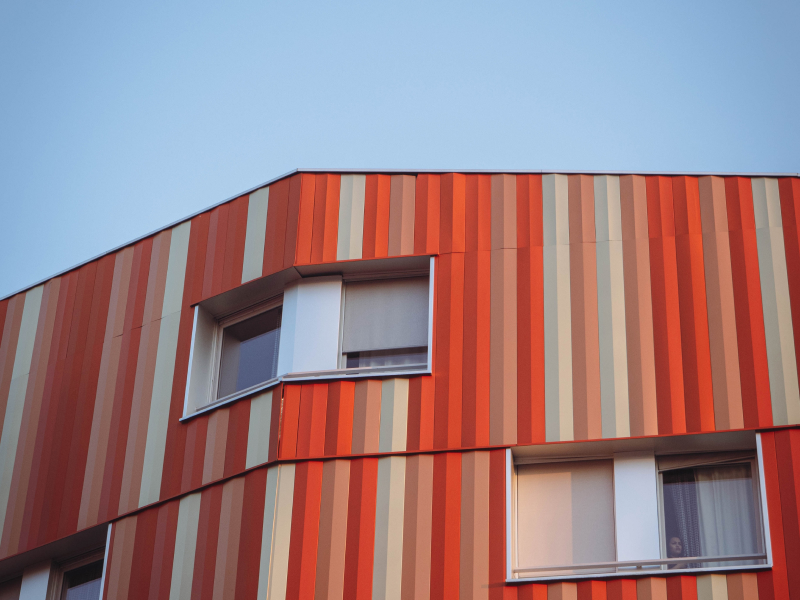
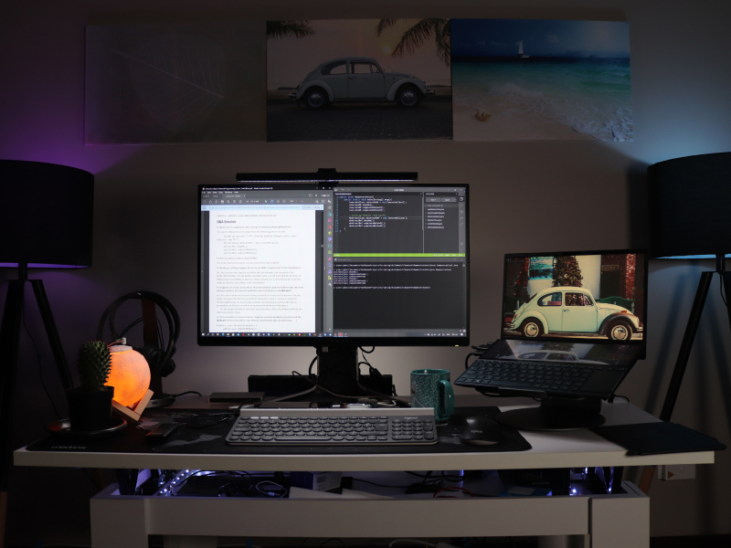

- 01. 요소 메서드 : 선택자 : querySelector() : 요소 선택자
- 02. 요소 메서드 : 선택자 : querySelectorAll() : 모든 요소 선택자
- 03. 요소 메서드 : 선택자 : document.getElementById() : 아이디 요소 선택자
- 04. 요소 메서드 : 선택자 : document.getElementByClassName() : 클래스 요소 선택자
- 01. 요소 메서드 : 클래스 : .classList.add() : 클래스 추가하기
- 02. 요소 메서드 : 클래스 : .classList.remove() : 클래스 삭제하기
- 03. 요소 메서드 : 클래스 : .classList.toggle() : 클래스 추가/삭제하기
- 04. 요소 메서드 : 클래스 : .classList.contains() : 클래스 존재 여부 확인하기
01. 요소 메서드 : .classList.add(), .classList.remove()

이 버튼을 클릭(selected)하면 두 번째 이미지가 선택됩니다.
이 버튼을 클릭(selected)하면 두 번째 이미지가 해제됩니다.
이 버튼을 클릭(selected)하면 모든 이미지가 선택됩니다.
이 버튼을 클릭(selected)하면 모든 이미지가 해제됩니다.
{
//두 번째 이미지 선택
document.querySelector('#sample1 .btn1').addEventListener('click', function (){
document.querySelector('#sample1 .view2').classList.add("selected");
});
document.querySelector('#sample1 .btn2').addEventListener('click', function (){
document.querySelector('#sample1 .view2').classList.remove("selected");
});
//모든 이미지 선택
document.querySelector('#sample1 .btn3').addEventListener('click', function (){
document.querySelectorAll("#sample1 .view > div").forEach(function(ele){
ele.classList.add("selected")
});
});
document.querySelector('#sample1 .btn4').addEventListener('click', function (){
document.querySelectorAll("#sample1 .view > div").forEach(function(ele){
ele.classList.remove("selected")
});
});
}02. 요소 메서드 : .classList.toggle()

{
//두 번째 이미지 선택
document.querySelector('#sample2 .btn1').addEventListener('click', function(){
document.querySelector('#sample2 .view2').classList.toggle("selected");
});
//모든 이미지 선택
document.querySelector('#sample2 .btn2').addEventListener('click', function(){
document.querySelectorAll('#sample2 .view > div').forEach((ele) => {
ele.classList.toggle("selected");
});
});
// 각각의 이미지를 클릭함녀 각각의 이미지를 선택/ 해제
document.querySelectorAll('#sample2 .view div').forEach((ele) => {
ele.querySelector('img').addEventListener('click', function(){
ele.classList.toggle("selected");
});
});
//리셋
document.querySelector('#sample2 .btn0').addEventListener('click',function(){
document.querySelectorAll('#sample2 .view > div').forEach(function(el){
el.classList.remove("selected");
});
});
}03. 요소 메서드 : .classList.contains()
{
}